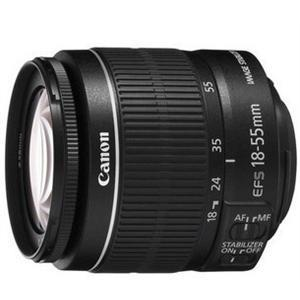

 这是一款小巧轻便的标准变焦镜头，换算成35mm规格能够覆盖相当于约29-88mm的视角。通过优化配置高精度PMo（树脂成型）非球面镜片，可以对球面像差等多种像差进行有效补偿，实现了全焦段的高画质。不仅如此，在整个焦段下其最近对焦距离均为约0.25米。在55mm视角下，最大放大倍率约为0.34倍，可以方便地对花朵或者宠物等进行放大拍摄。考虑到小型镜头的特性，IS影像稳定器采用的是超小型手抖动补偿机构，具有最大相当于约4级快门速度的手抖动补偿效果。它可以自动检测拍摄状态是普通拍摄或是追随拍摄以及是否使用三脚架或独脚架等，因此用户不需要切换手抖动补偿模式，就能获得适合现场状况的手抖动补偿效果。此镜头采用圆形光圈，可以实现美丽的虚化效果。通过优化的镜片配置和镀膜，有效抑制了鬼影和眩光的产生。此外镜身内置高速CPU和先进的自动对焦算法，实现了快速且可靠的自动对焦。
※此镜头仅限于套机形式，不单独销售。
| 镜头焦距 | 18-55mm |
|---|---|
| APS-C画幅下的35mm规格换算焦距 *1 | 约29-88mm |
| 镜头结构 | 9组11片 |
| 光圈叶片 | 6片（圆形光圈） |
| 最小光圈 *2 | 22-38 |
| 最近对焦距离 | 约0.25米 |
| 最大放大倍率 *3 | 约0.34倍 |
| 驱动系统 | DC马达 |
| 手抖动补偿效果 | 约4级 |
| 滤镜直径 | 58毫米 |
| 最大直径及长度 | 约Φ68.5×70毫米 |
| 重量 | 约200克 |